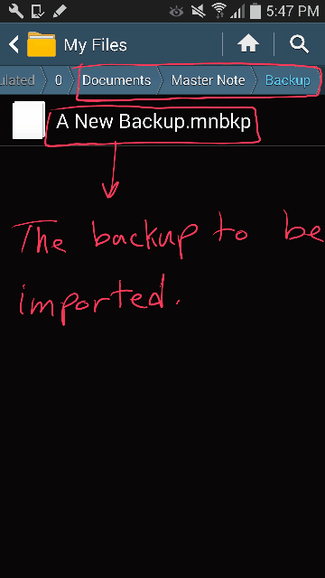

Importing a local backup
You can import any backup file located inside "Documents/Master Note/Backup/".
- Open the main menu from the upper right corner and choose "Settings"
- Under "Backup" press on "Import Backup". A list of the backup files inside "Documents/Master Note/Backup/" will popup
- Select the backup you would like to import and press import
Note:
You should be aware that when you import a backup file all your current data will be erased and
replaced with backup you are going to import!
The following GIF will help you know exactly how to import a backup of your data:
